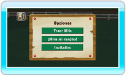
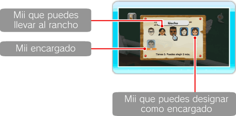
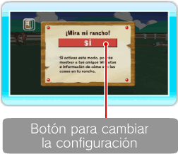

17 |
Opciones |
 |

Aquí encontrarás las opciones TRAER Miis, ¡MIRA MI RANCHO! e INVITADOS. ● Traer Miis Podrás llevar al rancho los Miis que tengas guardados en el Canal Mii. Apunta hacia el Mii que desees que aparezca en el rancho y pulsa Nota: Los Miis encargados del rancho tendrán el símbolo 

● ¡Mira mi rancho! Activa esta opción para enviar automáticamente a tus amigos Wii fotos o información sobre el estado de tu rancho a través de WiiConnect24 (ver “23. Configuración de WiiConnect24”). Apunta hacia el botón correspondiente para cambiar la configuración y pulsa Nota: Debes tener al menos una foto en el Álbum para poder usar esta función.
Para que las invitaciones se envíen a tus amigos Wii, primero debes salir del juego. Para ello, selecciona MENÚ DE Wii en el menú principal o MENÚ DE Wii en el menú HOME. ● Invitados Si activas esta función, un invitado inesperado podría aparecer en tu rancho a través de WiiConnect24 (ver “23. Configuración de WiiConnect24”). Nota: Ten en cuenta que esta función podría dejar de estar disponible en cualquier momento. |
 . Cuando el fondo se ponga azul, selecciona ACEPTAR Y VOLVER en la parte superior izquierda de la pantalla.
. Cuando el fondo se ponga azul, selecciona ACEPTAR Y VOLVER en la parte superior izquierda de la pantalla. debajo de sus rostros, por lo que no podrás seleccionarlos.
debajo de sus rostros, por lo que no podrás seleccionarlos. |
 |
 |